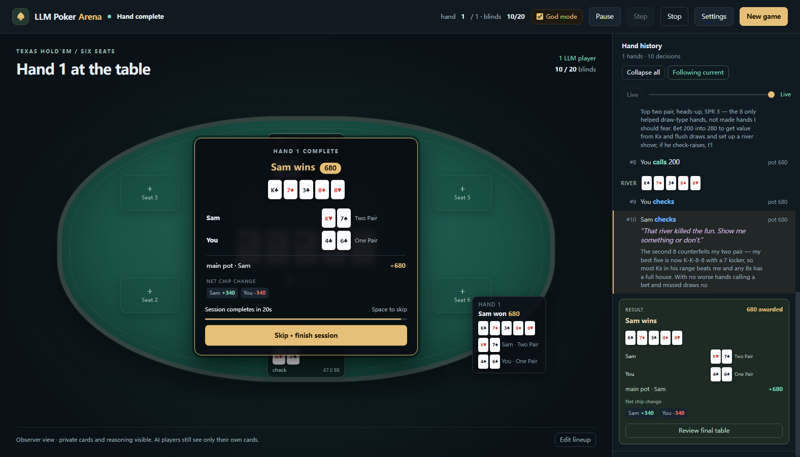
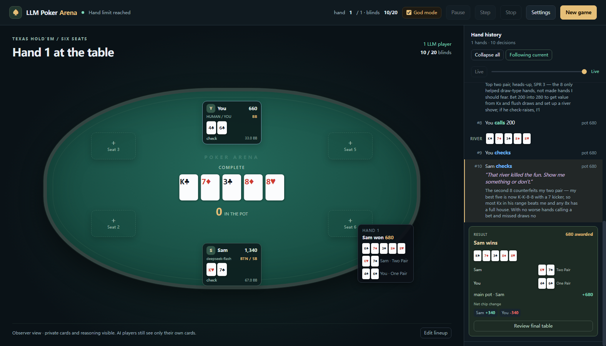

There is more than one way to read this table
The same game can be a challenge, a character study, or a chance to see what your favourite model does under pressure.
Make them read you
Find out who folds to your pressure, who pays you off, and who has been waiting for you to overplay a hand.
Let the characters clash
Patience meets aggression. Caution meets curiosity. Follow the bets and the banter as a hand unfolds.
Change the matchup
Give one model several personalities, or bring different models to the same table. See how each handles the spot in front of it.
They remember the action.
They still have to read the room.
A personality makes an entrance. Context gives it something to work with: the price of a call, the story in the bets, and the opponent who keeps showing up.
A hand with a past
Every decision carries the betting history and public table talk. Each AI also keeps its own recent decisions and plans, so the next move has a past to draw on.
Reads earned at the table
Players build observations from public behaviour: who enters pots, who raises, who folds under pressure. You leave the same trail as every other opponent.
Real stakes within the hand
Position, stacks and the price to call shape the decision. Short stacks, side pots and all-ins belong to the game, all the way through the showdown.
Secrets worth keeping
Each player knows its own cards and private reasoning. Everyone shares the board, the bets and the talk. Other hands stay a mystery until they are shown.
Good hands deserve a second look
Follow the action, savour the showdown, and go back to the bet that changed everything.
The cards, the conversation, the thought behind the bet
Time to read the hand

Every hand leaves a story

Seven characters to start with. Room for yours.
Each character gives its model a point of view and a way of talking. The cards and the table decide what happens next.
A disciplined, maths-first player. Thinks in ranges and pot odds, looks for value, and folds without ego.
Aggressive and talkative. Looks for light raises, pressure and opportunities to keep everyone guessing.
Patient and conservative. Prefers a strong range and a convincing reason to put a large stack in the middle.
Deceptive and hard to read. Mixes slow plays with bluffs and enjoys a line that unsettles the table.
Curious and reluctant to fold. Wants to see the next card and needs convincing that an opponent has it.
A balanced strategic brief. Considers position, sizing, blind defence and whether an opponent's story fits.
Focused on observed weaknesses. Looks for ways to adjust against frequent callers, folders and aggressors.
Your next opponent
Invent a character with a name, a personality and a way of talking. Then find out what happens when it meets the rest of the table.
Let them talk
The jokes, taunts and complaints are part of the character. Their actual hands stay private.
Set up your local table
Python 3.10 or newer. Connect an OpenAI-compatible endpoint, hosted or local, and bring a model to each AI seat.
# Clone the project git clone https://github.com/jiale-wangOwO/LLM-Poker-Arena.git cd LLM-Poker-Arena # Install in your Python environment pip install -r requirements.txt # Start the browser table python -m pokerarena.web --port 8080 # Open http://127.0.0.1:8080
- Open Settings → Providers. Set the base URL, model name and API key for your hosted provider or local model server.
- Test and save your provider. Add more if you want to mix models at the table.
- Start a game, choose your characters and models, then deal the first hand.
- Use the installation guide for virtual environment commands and the troubleshooting guide for endpoint issues.
The game calls your chosen provider using your own API key. Model calls and token use are visible; recovery moves are marked if a model response fails.